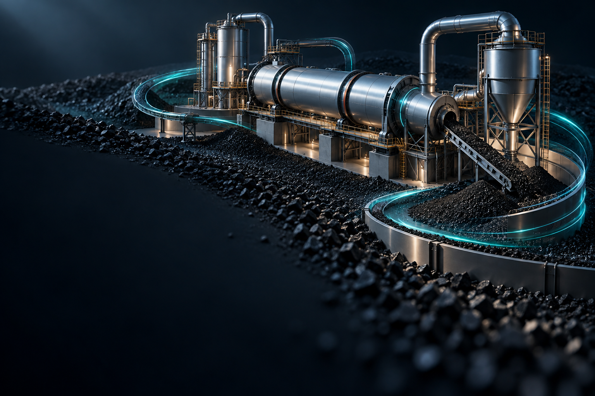

Virgin Activated Carbon
신탄 제조
원료의 특성과 사용 목적을 고려하여 높은 흡착성능과 균일한 품질의 활성탄을 제조합니다.
원료 선정부터 활성화, 입도 관리, 품질검사까지 제조공정을 체계적으로 관리합니다.


예산 공장은 활성탄 신탄 제조와 사용 후 활성탄의 리사이클을 담당하는 생산기지입니다.
원료의 특성과 사용 목적을 고려한 고품질 활성탄을 제조하고, 사용이 끝난 활성탄을 회수·재생하여 다시 산업현장에 공급함으로써 활성탄의 생애주기를 연장합니다.
사업분야 살펴보기 ↘활성탄 신탄 제조·사용 활성탄 회수 및 재생 관련 상담을 안내합니다.
방문·상담 문의 ↗연구개발과 생산, 고객 대응을 연결하는 주요 사업장입니다.
충북 청주시 흥덕구 옥산면 옥산산단2로 63
충남 예산군 고덕면 상몽산단로 170
경기도 하남시 미사대로 520 현대지식산업센터 한강미사2차 D동 643호
사용 환경과 요구 성능을 함께 검토하여 적합한 제품과 공정을 제안합니다.